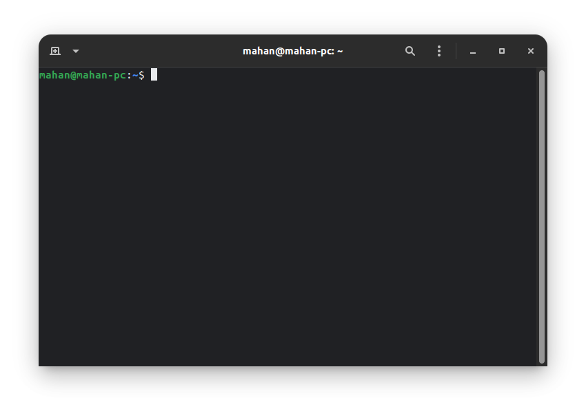

The terminal is a text-oriented way to work with your PC. If you have ever worked with MS-DOS, you are very familiar with it, since MS-DOS is a terminal-based OS. In Linux, apps are usually 2 types: Terminal based / CLI or GUI based/ Graphical. The terminal is just a prompt to type text. You can just type text in there. The mouse has no use in the terminal. You can write certain commands in the terminal to do certain things. Commands are just programs, that only output text, rather than graphics, like buttons, images, etc. Most commands take certain arguments. Arguments are variables you can give the command. For example, to remove a file, you can use the rm command.
